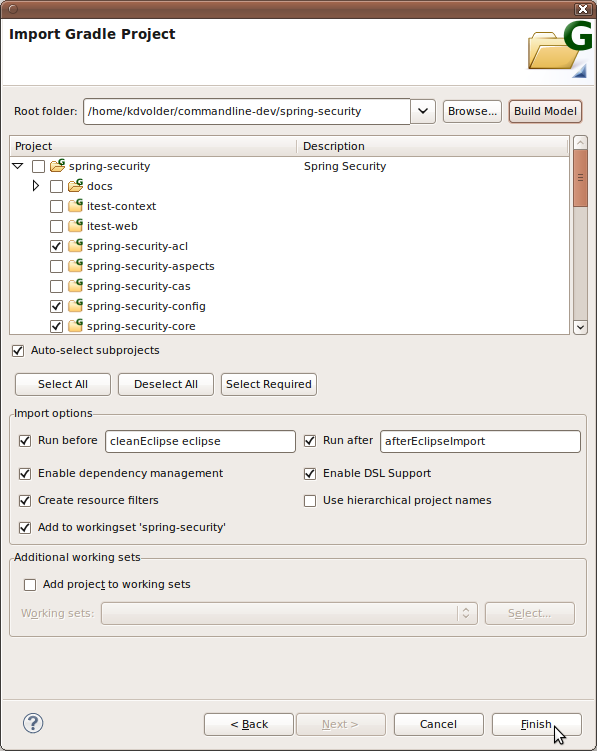
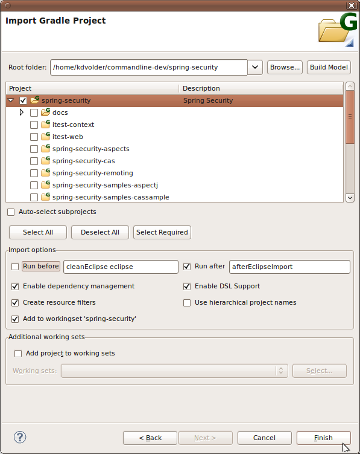
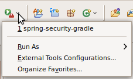

Note: The latest version of this file can always be found here
This tutorial will take you through the process of using the STS-Gradle tooling to import a Gradle multi-project into STS and execute some Gradle tasks on the imported project(s). This tutorial does not cover how to install the Gradle tooling into STS.
We will use spring-security project as a running example throughout this tutorial.
Note: There is also an older version of this tutorial based on the spring-integration project.
If you want to follow along, the first step is to checkout the source code from git:
git clone git://git.springsource.org/spring-security/spring-security.git
This will create the "spring-security" folder directly below whatever directory you typed the command in.
Now that we have the source code checked out we can use the Gradle Import Wizard to import a subset of the spring-security projects into an Eclipse workspace.
This wizard is accessible via the "File >> Import ..." menu.
The first thing you have to do in the wizard is point it to the root folder of your Gradle project. Click the "Browse" button and find the folder, or simply enter the path to your project folder if you remember it.
A typical Gradle project may consist of a hierarchy of (sub)projects. Before you can select which (sub)projects you are interested in you must request the Gradle API to construct a Gradle project/sub-project structure model. Click the "Build Model" button to do this.
Warning: This may take some time, so be patient!
After some time, once the model has been constructed, you will be able to select which projects you wish to import into the workspace. You could elect to import everything by clicking the "Select All" Button. However, let's assume we are only interested in the "spring-security-samples-jaas" project.
If a project is selected and that project has an inter-project dependency on another project, then this other project must also be imported. Otherwise, the imported project would have problems with its classpath (missing dependencies). The import wizard uses the project dependency information provided by the Gradle tooling API to check whether you have properly selected all required projects. In the screenshot above, a missing dependency on "spring-security-web" is detected and reported.
To fix it, select the missing project (but another missing dependency will be reported) or use the quick and easy "Select required" button which will automatically select required projects based on your current selection.
You may or may not want to import the root project (usually
it contains the main build script). If you
click the root project, you will notice that it automatically
selects/deselects all the subprojects below it. If you just want to select the root project alone, you can uncheck the "Auto-select subprojects" option.
Besides selecting which projects to import,
the wizard also provides
some additional options.
These options allow the execution of specific gradle tasks to aid in the initialization of imported projects. When enabled, the wizard will execute the given tasks on each imported project that defines the task(s).
Some default values are provided to support two common use cases.
Use case 1: execute cleanEclipse eclipse before importingEnabling this option means that STS will configure your project's dependencies based on information it obtains from calling the Gradle Tooling API. The center piece of this mechanism is a special 'Gradle Dependencies' classpath entry. The contents of this entry will be computed dynamically by calling on the Gradle Tooling API. This option is recommended for projects that are fully supported by the tooling API. At present this means 'pure' Java projects, or in Eclipse terms: projects that only require the Java nature.
The advantage of using this option is that your project's .classpath file will be free of user-specific references to files in the user's Gralde cache. Thus, it is viable to consider checking in files like .classpath into source control.
Thus also, enabling dependency management should be the default. Unfortunately, due to the limited nature of the current Gradle Tooling API, this option may not work well for many projects. If so, you may consider disabling the option and relying directly on your build script and the Gradle eclipse plugin's 'cleanEclipse' and 'eclipse' tasks to configure your projects on import instead.
Since 2.9.0, STS explicitly attempts to provide good support for this scenario. If dependency management is disabled then STS will not add the 'Gradle Dependencies' entry, nor will it configure source folders or dependencies between projects. Instead, you should select some tasks (typically 'cleanEclipse eclipse' to execute before import instead.
When dependency management is disabled, of course most of the menu commands related to dependency management will then be disabled. However since 2.9.0, the Refresh All command now provides an alternate implementation for just this case. The alternate implementation uses information captured and stored in .settings/gradle during import. This allows Refresh All to essentially re-import your project inplace. That is, the same before/after tasks will be re-executed, and the same set of selected customizations are re-applied to your project. Assuming that 'cleanEclipse eclipse' is amongst the selected before tasks, the effect of this is that all of your project's Eclipse configuration data is refreshed.
Note that if dependency managment is disabled, your generated .classpath file will not be suitable to share with other users via a source code repository. This is because it will typically contain references to files in the your local Gradle cache. Therefore, you should devise a process where each user generates their own .classpath (and other Eclipse/STS config files) locally.
A file which you may still want to consider committing to source control in
these scenarios is
${rootproject}/.settings/gradle/org.springsource.ide.eclipse.gradle.core.import.prefs"
This file contains the most important configuration options for the import Wizard. If the file is present the import wizard will use it to set the defaults accordingly. So if your project requires a set of very specific options to correctly import into STS, then sharing this file can help taking the the guess work out of the import process. The contents of this file has been purposefully designed to be used in this fashion. It should only contain information that is safe to share amongst users (e.g. it does not contain absolute paths specific to one user's local file system).
Enabling this option will enable DSL support in the Groovy Editor. What this means is that, if you have Groovy Eclipse installed, you will get a modicum of Gradle awareness while editing .gradle files. I.e. simple code assist and JavaDoc style hover's for some elements in your build script will be provided.
Selecting this option will enable DSL support for all the imported projects at once. If you only want to enable it for selected projects. Then you should disable the option in the wizard and enable it for individual projects afterwards via "Gradle >> Enable DSL" menu.
Enabling this option will add resource filters to the imported projects to "hide" nested projects from the parent project.
This deserves some further explanation. Eclipse (and therefore STS) essentially does not support project hierarchies. Only a "flat" project structure is supported in Eclipse and projects can not contain other projects.
To overcome this limitation, a Gradle project hierarchy is flattened
into a list of Eclipse projects. The projects will be imported as
"linked projects" so that nesting structure is still maintained in the
file system structure of the imported projects. However, if you import
both a parent and (some of) its children in this way, it will appear as
if the resources (files and folders) in the children are present
multiple times in the workspace: once in the child itself and also once
inside a nested folder of the parent project that contains the child.
Although Eclipse supports this kind of setup, and it is possible to
work with workspaces that show the same underlying file aliassed in
multiple locations in the Eclipse workspace, it can be confusing.
For example if you pressed "CTRL-SHIFT-R" to "open resource" and
searched for one of these aliassed resources, you would see that
resource appear multiple times. To avoid this, keep the "create
resource filters" enabled. This will configure the parent project in
such a way that the children's project's resources are treated as
"invisible/non-existent" in the parent.
This option selects between two different project naming schemes.
Names of the imported Eclipse projects can be chosen
freely by the user. Since the projects are represented as links to the
actual file system location, the names of the projects don't affect the
underlying project structure. Of course, choosing sensible names will
help in remembering what each Eclipse project represents in terms of
the Gradle project hierarchy!
The wizard will give an initial name to each imported project based on
one of two naming schemes. This choice only affects the initial names assigned by
the wizard, you can still rename the projects after importing them.
hierarchical: the name of each project consists
of the name of each ancestor in the path leading to the project and the
project itself, separated by dots. For example the
"spring-integration-test" project would get Eclipse name
"spring-integration.spring-integration-test" in the hierarchical naming
scheme.
non-hierarchical: only
the name of the project itself (not its parents) is used. For example
"spring-integration-test" will be imported as a project called
"spring-integration-test".
WARNING: It is recommended you do not use this option if you are relying on you are using the 'eclipse' gradle task to help configure the project. The reason for this is that Gradle won't know about the fact that STS is renaming the project's. Thus any gradle generated configuration that contains references to project names may not work well together with the hierarchical naming scheme.
This creates a working set based on the root
project's name and adds all imported projects to this workingset. If the working set already exists this option will say
"add" instead of "create". It will still add the projects to this
workingset, but, since it already exists, won't try to create it again.
This provides a similar UI to the standard Eclipse
import wizard for adding projects to working sets. It allows you to add
the imported projects to an arbitrary number of working sets. You can
use this instead of (or in conjunction with) the previous option. The
previous option is more convenient and quick (in terms of numbers of
clicks and keystrokes required) but if you need more control over the
working sets and/or their names, this UI is provided as a more general
fall-back option.
For this tutorial we leave everything at the default settings, except for the 'run before' option which we explicitly enable since we want to have correct configuration for the WTP aspects of the sample web project.
Once you click finish, the selected projects will be imported into the Eclipse workspace.

Depending on selected opton. The import wizard will automatically configured projects as follows.
In all cases:
If dependency management is enabled
If dependency management is disabled then these configurations will not be automatically applied. Instead, it is assumed that you have defined and selected appropriate run before/after gradle tasks to achieve a similar effect.
If DSL support is enabled, the following additions will be made to your project's configuration:
Note that this turns your project into a Groovy project. Because of limitations in both AJDT and Greclipse, DSLD support can not be enabled for AspectJ projects. If you attempt to do so, an error will be reported during import and the DSL support will not be added to any affected projects. However, the import should still proceed and no other ill effects should result from this error.
The sceenshot below shows the workspace right after the import finished:
/ul>Presently, the Gradle tooling API which we built upon does not tell us when a Gradle project model needs to be updated. As a result, the configuration will become outdated. To force various aspects of the project configuration to be recomputed you can invoke the commands in the Gradle context menu accessed by right clicking on the Gradle project.
Disable(or enable) dependency management: Remove/add the Gradle class path container from/to the project.
Removing the container means that you intend to take personal responsibility for managing the project's dependencies and do not want to have the Gradle tooling do it for you at all.Refresh Dependencies: for each of the selected projects (one or more Gradle projects can be selected. All selected projects must have dependency management enabled)
- Invalidate and request a new Gradle model from the tooling API
- Recompute the contents of the class path container
- Recompute and reconfigure project dependencies
Refresh Source Folders: Like Refresh Dependencies, but recomputes and reconfigures the project's source folders.
Refresh All:combination of Refresh Dependencies and Refresh Source Folders.
Note that dependencies between projects and source folder configuration are stored in your project's metadata (the .classpath file). This means they will persist across Eclipse sessions.
Since 2.7.M2 the contents of the classpath container is also
persisted in your workspace metadata. This reduces the time it takes
for the IDE to become responsive when it starts up. However, it means
you may need to manually trigger a refresh once in a while. You can
tell whether a container
was initialized from persisted state because it will be labeled as
"Gradle Dependencies (persisted)".
The import wizard is designed to support importing a subset of subprojects first and, later on, import additional projects as needed.
For example, earlier on we decided not to import the root project.
Let's say we want to import it now, so we can easily examine and edit
the main build script.
To import additional projects, simply reopen the import wizard as before
and point it again to the root of the project hierarchy. The project should already
be available from the project combo's pull-down history.
To import the root project in isolation, we deselect '"Auto-select
subprojects" and then select the root project, as shown below.

For example, if we would re-open the import wizard again after importing the root project, we would see this:
Note the root project's transparant look, indicating that it was already imported before.
In the next section of this tutorial we'll walk through the UI for creating and launching Gradle launch configurations. Gradle launch configurations are provided as extensions to the standard Eclipse launching framework. This means that if you are already familiar with the Eclipse launch UI, most of this will be familiar to you.
Creating and Executing a Launch ConfigurationBefore we can "launch" a list of Gradle tasks, we must create a launch configuration. The easiest way to do that is by using the "Run As" context menu. This menu is accessed by right clicking on a Gradle project or one of its nested resources in the Package Explorer.

Run As >> Gradle Build ... (dots at the end)Since this is our first time launching anything for the spring-integration project, no launch configuration exists yet. We right click on the root project's build file (or any other resource in the project) and select "Run As >> Gradle Build...". An editor as shown in the screenshot below opens up.
This opens a Gradle launch configuration associated with the current project in the Tabbed launch configuration editor. This allows you to examine and edit the configuration before launching it.Run As >> Gradle Build (no dots at the end)
If no launch configuration exists yet (for the selected project) an empty one will be created automatically. If more than one configuration is found, you will be asked to choose one.
This attempts to directly launch a Gradle launch configuration associated with your project. Typically you would use this if you already have a launch configuration defined and want to just launch it without examining or editing it. If a launch configuration doesn't exist yet, however, one will be created and opened in the editor. If more than one configuration already exists for the selected project, then a dialog will popup to ask you to choose one.External Tools Configurations
This opens the generic Eclipse "External Tools Configurations" editor, allowing you to create / edit / save etc. launch configurations of different types, including Gradle launch configurations.
You can either click on the toolbar button itself or use its pull-down menu.
The "Gradle Tasks" view added in STS 2.9.0.M1 provides an alternative mechanism that allows you to quickly launch a specific individual task without the hassle of using the standard Eclipse launch configuration editor.
To open the view, use the Windows >> Show View menu.

You will find the tasks view in the "Gradle" category.
The view allows you to select a Gradle project and shows the tasks available for that project. Double-clicking a task in the view will launch that task.
The task view provides two buttons in its toolbar, from left to right:
The tasks view provides a search box. Enter a string in this box to see only those tasks starting with that string. You can also add a "*" in front to search for substrings instead.